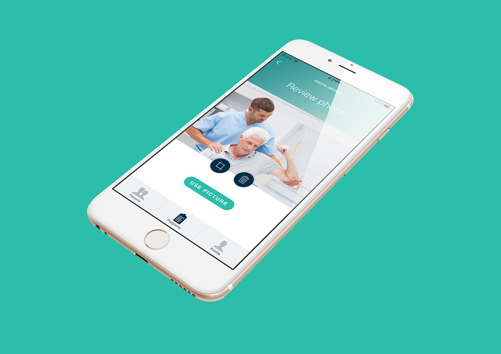

Habitlab's first specialized iOS application for physiotherapists to increase compliance in their patients through 1:1 personalized programs. Developed with the participation from a physiotherapist.
Vlad Manea was among the co-founders of the Habitlab startup in Copenhagen, Denmark and led a software engineering team of 5 people. See the complete team who contributed to the Habitlab app here.

The physiotherapist assists the patient in performing the physiotherapy exercises, captures the movement, gives advice to the patient and then creates visual memories for the patient to follow at home.The physiotherapist creates a customized program with weeks, steps, exercises, repetitions and durations that gets sent to the patient at the end of the session, along with a schedule to follow.The patient connects to the application and follows the instructions given captured visual memories from the physiotherapist. Our trackers inform the physiotherapist on the progress with charts.The physiotherapist can choose a pricing option based on the number of patients she or he heals over a month. Additionally, she or he takes part of our modern network of healthcare professionals.
Habitlab implemented this app in only 2 months, while at the Thinkubator think-tank and incubator hosted at a vibrant garage turned into a 5* entrepreneurial working space part of Dare2Mansion.